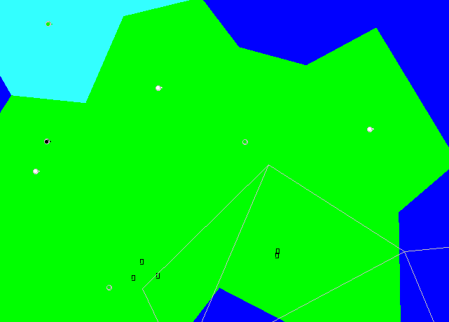
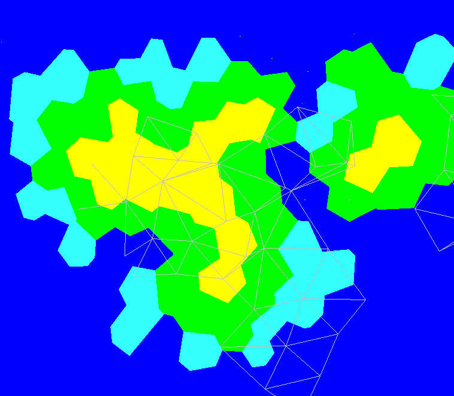
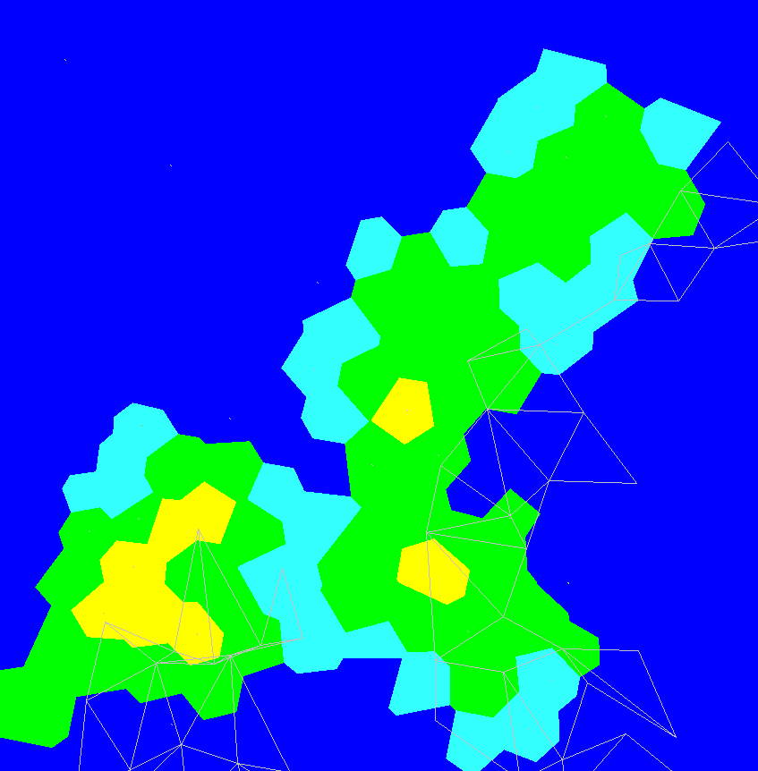
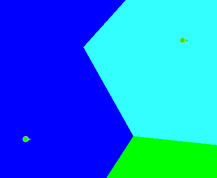
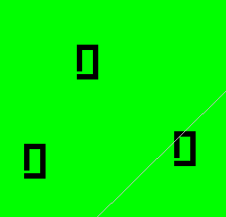
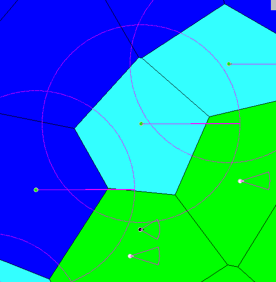
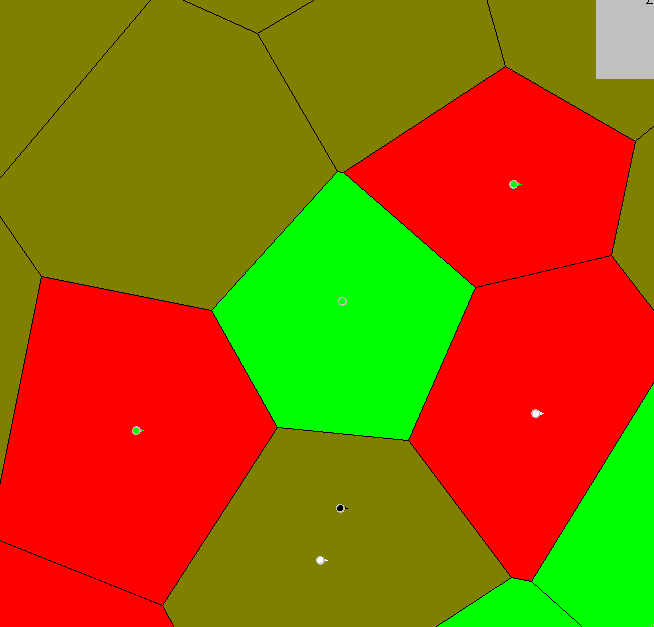

Currently "Completed" Features:
- Controllable units with various actions and AI
- Elementary projectile simulation
- Reloading, turrets, tank vs bipedal movement patterns, various weapon ranges
- Collision engine with solid bodies
- Procedural town generation
- Procedural map generation
- Maps represented by voronoi polygon grid
- Save/Load of maps
- Ocean/Coastal Regions
- Unit types divided between seafaring and land based
- A* Pathfinding on all units
- Procedural foliage placement
- Creation of faction/unit specification in XML documents
- Home-built visual and audio engine
- Experimental multiplayer
- Intelligent, automatic analysis of relative location strategic value and auto balancing of initial game state
Future goals:
- Procedural Campaign Story/Level generation
- More units
- More factions
- Base building
- Unit abilities
- More assets
- Ocean current/Wind simulation
- Submarines
- Airplanes
- Faction Editing
- Enemy Player AI
- Dedicated Servers
- 3D??
Sample Images

A sample of a generated gameworld.

Another sample gameworld.

A third gameworld.

The green is land by the coast. The light blue is coastal-depth waters. The dark blue is inter-continental-depth waters.

A procedurally generated town. Projectiles and units both have collision with each wall in the structure.

A view that shows the ranges of given units. The ships in the ocean have turrets that can fire even if they're not facing their target.

The engine tries to evenly distribute units for both players across the map so that the starting positions are relatively equal.

The game keeps track of who has control of what region of the world. The goal was to have economic mechanics based on this eventually.